Вся валюта представляет из себя Orb-ы и Scroll-ы. Каждая "денежная" еденица несет свой смысл - крафт, улучшение брони и т.д.
Элементы можно выбить из мобов, достать из сундуков, купить у торговца или получить после продажи определенной комбинации товаров торговцу.
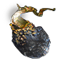→ 1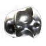→ 2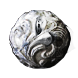→ 4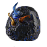→ 1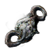→ 4 → 2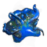→ 4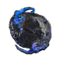→ 4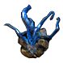→ 7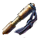→ 3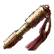
→ 2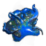→ 4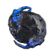→ 4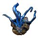→ 7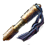→ 3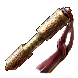
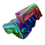→ 3
 → 8
→ 8 → 3
→ 3 → 1
→ 1
| Icon | Name | Description |
|---|---|---|
| 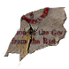 | Scroll Fragment | 5 дают Scroll of Wisdom |
| Scroll of Wisdom - Act 1 ( baseline currency ) | Идентифицирует предмет | |
| Portal Scroll - Act 1 ( 3 Wisdoms ) | Открывает портал в город |
| Icon | Name | Description |
|---|---|---|
| Armourer's Scarp - Act 3 ( 1 Blacksmith Whetstone ) | Улучшает броню. Max = 20%. Чем ниже класс брони, тем больше процентов будет добавлено. | |
| Blacksmith's Whetstone - Act 2 ( 3 Armourer's scraps ) | Улучшает оружие. Max = 20%. Чем ниже класс, тем больше процентов будет добавлено. | |
| Glassblower's Bauble - Act 3 ( 8 Blacksmith Whetstone ) | Улучшает зелья. Max = 20%. Чем ниже класс, тем больше процентов будет добавлено. | |
| Cartographer's Chisel | Улучшает карты. Max = 20%. Чем ниже класс, тем больше процентов будет добавлено. | |
| Gemcutter's Prism | Улучшает гемы (gem). Max = 20%. Чем ниже класс, тем больше процентов будет добавлено. |
| Icon | Name | Description |
|---|---|---|
| Jeweller's Orb - Act 2 ( 2 Alterations ) | Изменяет количество сокетов у вещи. | |
| Chromatic Orb - Act 2 ( 3 Jewellers ) | Изменяет цвета сокетов у вещи. | |
| Orb of Fusing - Act 2 ( 4 Jewellers ) | Изменяет связи сокетов у вещи. |
| Icon | Name | Description |
|---|---|---|
| 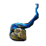 | Transmutation Shard | 20 дают Orb of Transmutation |
| Orb of Transmutation - Act 1 ( 7 Portals ) | Белая вещь → Синяя вещь. Добавляет префикс, суффикс или все сразу, если повезет. | |
| Orb of Chance - Act 3 ( 1 Fusing ) | Белая вещь → Случайно в синюю или желтую. | |
| 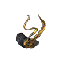 | Alchemy Shard | 20 дают Orb of Alchemy |
| Orb of Alchemy - Act 3 ( 1 Regret ) | Белая вещь → Желтая вещь. |
| Icon | Name | Description |
|---|---|---|
| Orb of Augmentation - Act 1 ( 4 Transmutations ) | Добавляет синей вещи новое свойство. Всего может быть до 2-х свойств. | |
| 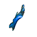 | Alteration Shard | 20 дают Orb of Alteration |
| Orb of Alteration - Act 1 ( 4 Augmentations ) | Пересоздает свойства синей вещи. | |
| 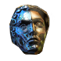 | Regal Orb | Синяя вещь → Желтая вещь. При этом старые свойства сохраняются и добавляются новые. |
| Icon | Name | Description |
|---|---|---|
| 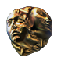 | Exalted Orb | Добавляет желтой вещи новое свойство. Всего может быть до 6-ти свойств. |
| 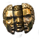 | Chaos Orb | Пересоздает свойства желтой вещи. |
| Icon | Name | Description |
|---|---|---|
| 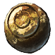 | Blessed Orb | Кольца, амулеты и ремни имеют свои начальные значения для свойств. Например, сопротивление всем элементам от 8 до 12%. Не воздействует на аффиксы. |
| 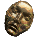 | Divine Orb | Позволяет повысить или понизить значение аффикса у синей/желтой вещи. Апгрейд происходит в диапазоне текущего аффикса. Воздействует на все аффиксы текущей вещи. |
| Icon | Name | Description |
|---|---|---|
| Orb of Regret - Act 2 ( 2 Scouring ) | Дает 1 очко сброса умений. | |
| Orb of Scouring - Act 2 ( 4 Chances ) | Удаляет все свойства у магической, редкой и уникальной вещи. | |
| 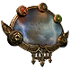 | Mirror of Kalandra | Создает зеркальную копию вещи или дублирует карту. Только для неуникальных вещей. Копия не подлежит модификации (качество, сокеты). Самый дорогой предмет валюты в игре. |